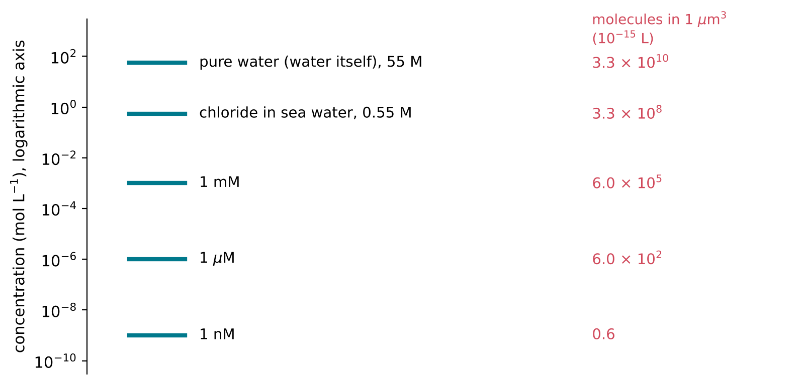

6 Counting Molecules: Moles and Concentration
The question of this chapter
A chemist who wants to make water from hydrogen and oxygen needs two molecules of hydrogen for every molecule of oxygen. Molecules, however, cannot be counted one by one; even a speck of matter contains far too many. This chapter asks: how do chemists count molecules? The answer is the mole, a unit that links the number of particles to a mass that can be weighed. From it follow the molar mass, the concentration of a solution, and the behaviour of gases.
6.1 The mole
Counting by weighing
A bank that receives a large bag of identical coins does not count them one by one; it weighs them. If one coin has a mass of 5.00 g and the bag contains 2.50 kg of coins, the bag holds 500 coins. Chemists count atoms and molecules in the same way: the mass of a sample, divided by the mass of one particle, gives the number of particles. The only difficulty is that the numbers are enormous, and a special unit is used to handle them.
Definition of the mole
The mole (symbol mol) is the SI unit of amount of substance. Since 2019 it has been defined by fixing the number of particles it contains: one mole contains exactly 6.022 140 76 × 1023 specified elementary entities (Bureau International des Poids et Mesures 2019). The entities may be atoms, molecules, ions or electrons, and they must always be stated: one mole of water molecules, one mole of sodium ions. The fixed number, expressed per mole, is the Avogadro constant:
\[ N_\mathrm{A} = 6.022\,140\,76 \times 10^{23}\ \mathrm{mol}^{-1} \]
It is exact by definition (National Institute of Standards and Technology, n.d.). The amount of substance n and the number of particles N are related by
\[ N = n \times N_\mathrm{A} \]
Two moles of hydrogen molecules therefore contain 2 × 6.022 × 1023 = 1.204 × 1024 molecules.
The mole is a counting unit, like a dozen, but for a number with 24 digits. Its size was chosen for convenience. Before 2019 the mole was defined by requiring the molar mass of carbon-12 to be exactly 12 g per mole, so that the Avogadro constant was the number of atoms in 12 g of carbon-12 (Bureau International des Poids et Mesures, n.d.). The new definition was chosen to agree with the old one within the precision of measurement. As a result, one mole of any substance has a mass in grams equal to the relative mass of its molecules, introduced in Chapter 2. This is what makes the mole so useful.
6.2 Molar mass
From daltons to grams per mole
The molar mass of a substance, symbol M, is the mass of one mole of it, usually given in grams per mole (g mol−1). Numerically, the molar mass in g mol−1 equals the relative molecular mass (or the atomic weight, for an element). A water molecule has a relative molecular mass of 18.015 (Chapter 2), so the molar mass of water is 18.015 g mol−1: one mole of water, 6.022 × 1023 molecules, has a mass of 18.015 g, a little more than a tablespoon of water.
The molar mass of a compound is calculated by adding the atomic weights of its atoms. For carbon dioxide, CO2:
\[ M(\mathrm{CO_2}) = 12.011 + 2 \times 15.999 = 44.009\ \mathrm{g\ mol^{-1}} \]
For ribose, C5H10O5 (Chapter 4):
\[ M = 5 \times 12.011 + 10 \times 1.0080 + 5 \times 15.999 = 150.13\ \mathrm{g\ mol^{-1}} \]
Converting between mass, amount and number
The amount of substance in a sample of mass m is
\[ n = \frac{m}{M} \]
and the number of particles follows by multiplying by NA. Chapter 1 stated that a drop of water of about 0.05 mL contains about 1.7 × 1021 water molecules. The calculation runs as follows. Water at room temperature has a density of 997 kg m−3 (International Association for the Properties of Water and Steam 2011), very nearly 1 g per millilitre, so the drop has a mass of about 0.050 g. Its amount of substance is
\[ n = \frac{0.050\ \mathrm{g}}{18.015\ \mathrm{g\ mol^{-1}}} = 2.8 \times 10^{-3}\ \mathrm{mol} \]
and the number of molecules is 2.8 × 10−3 mol × 6.022 × 1023 mol−1 = 1.7 × 1021.
The same steps run in reverse. To prepare 0.10 mol of sodium chloride (molar mass 22.990 + 35.45 = 58.44 g mol−1), weigh out 0.10 × 58.44 = 5.8 g.
How small a molecule is
The Avogadro constant also gives the mass of a single molecule. One water molecule has a mass of 18.015 g mol−1 divided by 6.022 × 1023 mol−1, which is 2.99 × 10−23 g. Since each molecule in liquid water occupies a volume equal to the molar volume divided by NA, and one mole of liquid water occupies about 18 mL, each molecule has about 3.0 × 10−23 mL, or 3.0 × 10−29 m3, to itself: the volume of a cube about 0.31 nm on each side. A water molecule is therefore a few tenths of a nanometre across.
6.3 Concentration
Amount concentration
Most of the chemistry of life takes place in water. To describe a solution, it is not enough to know how much solute it contains; what matters is how much solute there is in a given volume. The amount concentration, often simply called the concentration, is the amount of solute divided by the volume of the solution:
\[ c = \frac{n}{V} \]
It is usually expressed in moles per litre (mol L−1), a unit written M and called “molar”. A solution containing 0.10 mol of sodium chloride in a total volume of 1.0 L has a concentration of 0.10 mol L−1, or 0.10 M. The concentration of a substance X is often written [X], so that this statement can be written [NaCl] = 0.10 M.
Concentrations in the chemistry of life span many orders of magnitude, and the SI prefixes are used: millimolar (mM, 10−3 M), micromolar (\(\mu\)M, 10−6 M) and nanomolar (nM, 10−9 M).
Some concentrations for orientation
- Pure water. One litre of water at 25 °C has a mass of 997 g, which is 997/18.015 = 55.3 mol. The “concentration” of water in water is therefore about 55 M. This large number reappears whenever water takes part in a reaction.
- Sea water. In the standard composition of present-day sea water, the main dissolved ions are chloride (0.546 mol per kilogram of sea water), sodium (0.469 mol kg−1), magnesium (0.0528 mol kg−1) and sulfate (0.0282 mol kg−1) (Millero et al. 2008). Sea water is therefore roughly half a mole per litre in sodium chloride.
- Dilute building blocks. Many experiments on the origin of life use the starting materials at millimolar concentrations or higher. Natural waters on the early Earth may have contained some of these molecules at much lower concentrations, and how they could have been concentrated is one of the central questions of the field.
Figure 6.1 places these concentrations on a logarithmic scale.

Concentrations are sometimes given in units of mass instead of amount, such as grams per litre (g L−1) or milligrams per litre. To convert a mass concentration into an amount concentration, divide by the molar mass: 9.0 g L−1 of sodium chloride is 9.0/58.44 = 0.15 M.
Concentration and the number of molecules in a small volume
At low concentrations and in small volumes, the number of molecules can become very small. A volume of 1 \(\mu\)m3, a cube one micrometre on each side, is 10−15 L. At a concentration of 1 nM it contains
\[ 10^{-9}\ \mathrm{mol\ L^{-1}} \times 10^{-15}\ \mathrm{L} \times 6.022 \times 10^{23}\ \mathrm{mol^{-1}} = 0.6 \]
molecules on average, that is, sometimes none and sometimes one or two. A bacterial cell is about this size. Inside it, “1 nanomolar” therefore means roughly one molecule per cell, and any notion of a smoothly varying concentration breaks down.
6.4 Dilution and concentration
Dilution
Adding solvent to a solution does not change the amount of solute it contains; it only spreads the solute through a larger volume. Since n = cV is the same before and after,
\[ c_1 V_1 = c_2 V_2 \]
where c1 and V1 are the concentration and volume before dilution, and c2 and V2 after. Diluting 10 mL of a 1.0 M solution to 100 mL gives a concentration of 1.0 M × 10 mL / 100 mL = 0.10 M, a tenfold dilution.
Concentration by evaporation
The same equation, read in the other direction, describes concentration. If water evaporates from a solution and the solute stays behind, the volume falls and the concentration rises in proportion. A pond that loses 99 % of its water by evaporation concentrates every non-volatile solute a hundredfold, provided that nothing is lost by other routes, such as crystallisation, seepage or reaction. Repeated drying and wetting of shallow pools is one of the main mechanisms proposed for concentrating the building blocks of life on the early Earth, and the arithmetic of concentration is simply the dilution equation run backwards.
6.5 Gases
The ideal gas law
In a gas, the molecules are far apart and move independently. For most gases near ordinary temperatures and pressures, pressure p, volume V, amount n and absolute temperature T are related by the ideal gas law:
\[ pV = nRT \]
where R is the molar gas constant, 8.314 J mol−1 K−1 (National Institute of Standards and Technology, n.d.). Its value is exact, since it is the product of two constants fixed by definition, the Avogadro constant and the Boltzmann constant. Pressure is the force per unit area exerted by the gas on the walls of its container, measured in pascals (Pa); the bar, equal to 105 Pa, is close to atmospheric pressure at sea level, and the standard atmosphere is exactly 101 325 Pa.
The ideal gas law contains a remarkable fact: the volume of a gas depends on the number of its molecules, not on what they are. At 25 °C (298.15 K) and 1 bar, one mole of any ideal gas occupies
\[ V = \frac{nRT}{p} = \frac{1\ \mathrm{mol} \times 8.314\ \mathrm{J\ mol^{-1}\ K^{-1}} \times 298.15\ \mathrm{K}}{10^{5}\ \mathrm{Pa}} = 0.0248\ \mathrm{m^3} = 24.8\ \mathrm{L} \]
Mixtures of gases and partial pressure
In a mixture of gases, each gas contributes to the total pressure in proportion to its amount. The pressure that a gas in a mixture would exert if it alone filled the container is its partial pressure, and the total pressure is the sum of the partial pressures. The partial pressure of each gas equals its fraction of the molecules multiplied by the total pressure.
Dry air today consists, by volume and therefore by number of molecules, of 78.08 % nitrogen, 20.95 % oxygen and 0.93 % argon, together with smaller amounts of carbon dioxide and other gases (NASA Space Science Data Coordinated Archive 2024). At a total pressure of 1 bar, the partial pressure of oxygen is therefore about 0.21 bar. The atmosphere of the early Earth was very different: it contained essentially no free oxygen, and its composition is one of the main uncertainties in the study of the origin of life.
Key points
- The mole is the SI unit of amount of substance. One mole contains exactly 6.022 140 76 × 1023 entities; this number per mole is the Avogadro constant NA. N = n NA.
- The molar mass M, in g mol−1, equals the relative molecular mass: water 18.015 g mol−1, CO2 44.009 g mol−1, ribose 150.13 g mol−1. The amount of substance is n = m / M.
- A drop of water (0.05 mL) contains about 1.7 × 1021 molecules; a water molecule is a few tenths of a nanometre across.
- Concentration c = n / V is usually given in mol L−1 (M), with mM, \(\mu\)M and nM for dilute solutions. Pure water is about 55 M; sea water about 0.5 M in sodium chloride.
- In a volume of 1 \(\mu\)m3, a concentration of 1 nM corresponds to less than one molecule on average.
- In dilution and concentration, c1V1 = c2V2. Evaporating 99 % of the water concentrates a non-volatile solute a hundredfold.
- For gases, pV = nRT, with R = 8.314 J mol−1 K−1. One mole of gas occupies 24.8 L at 25 °C and 1 bar. Each gas in a mixture contributes its partial pressure.
Self-test
- Calculate the molar mass of glucose, C6H12O6, using Table 2.2. How many moles are there in 90 g of glucose?
- How many molecules are there in 1.0 g of water?
- 5.85 g of sodium chloride is dissolved in water to make 250 mL of solution. What is its concentration in mol L−1?
- A pool contains a solute at 2 \(\mu\)M. Evaporation reduces its volume to one-fiftieth, with no loss of solute. What is the new concentration?
- What volume does 2.0 mol of nitrogen gas occupy at 25 °C and 1 bar, assuming ideal behaviour?